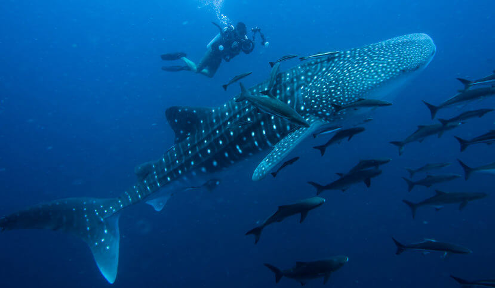

| Espécies | Foto |
|---|---|
| Tubarão-branco |  |
| Tubarão-martelo |  |
| Tubarão-baleia | |
| Tubarão-azul |  |
Tubarão-baleia (Rhincodon typus)
De tamanho notável (pode alcançar até 12 m de comprimento e peso de 12,5 toneladas) e aparência semelhante à de uma baleia (que inspirou o nome vulgar da espécie), o tubarão-baleia (Rhincodon typus) caracteriza-se por uma cabeça achatada e boca grande, cuja abertura pode atingir até 1,5 m, quase a largura total de seu corpo. Este peixe possui olhos pequenos, atrás do qual encontram-se espiráculos, além de cinco fendas branquiais em cada lado da cabeça.
Sua coloração singular consiste em uma de suas características mais marcantes: o dorso e laterais variam entre tons cinza e azul escuro, pontuados por manchas claras redondas, enquanto a região dorsal é predominantemente branca. Os padrões observados para as manchas revelam, inclusive, os diferentes indivíduos de uma população, sendo utilizados para a identificação destes animais. O tubarão-baleia apresenta cerca de 300 pequenos dentes em sua boca, cuja função permanece desconhecida, e 10 pares de órgãos filtradores, que auxiliam na alimentação deste condricte. Este peixe também possui um par de nadadeiras dorsais (entre as quais, a primeira é maior do que a segunda) e peitorais, além de uma nadadeira caudal em forma de meia-lua.
A alimentação do tubarão-baleia consiste principalmente de plâncton e outros pequenos organismos como lulas, caranguejos e peixes, ingeridos através do método de sucção e filtração. Estes tubarões nadam com a boca aberta por manchas de plâncton, sugando suas presas através do bombeamento exercido pelas brânquias; esta técnica denomina-se “filtragem de fluxo cruzado”, e também é utilizada pelas baleias de barbatana (Ordem Mysticeti).
Após este processo, o tubarão-baleia fecha sua boca, retendo o plâncton em seus órgãos filtradores (que apresentam formato semelhante à pequenas almofadas), expelindo o excesso de água através de suas brânquias.
Poligâmicas (possuem vários parceiros sexuais) e ovovivíparas (ovos são chocados e eclodem dentro do corpo materno), as fêmeas de tubarão-baleia alcançam a maturidade sexual por volta dos 30 anos de idade, e dão à luz filhotes que apresentam entre 40-60 centímetros de comprimento. O número de filhotes que nascem a cada estação reprodutiva é incerto, porém acredita-se que seja alto, vide a captura de uma fêmea grávida que continha 300 ovos em seu útero. O nascimento da prole também não ocorre simultaneamente: a fêmea de tubarão-baleia possui a capacidade de armazenar esperma, podendo desenvolver novos embriões ao longo de diferentes temporadas reprodutivas.